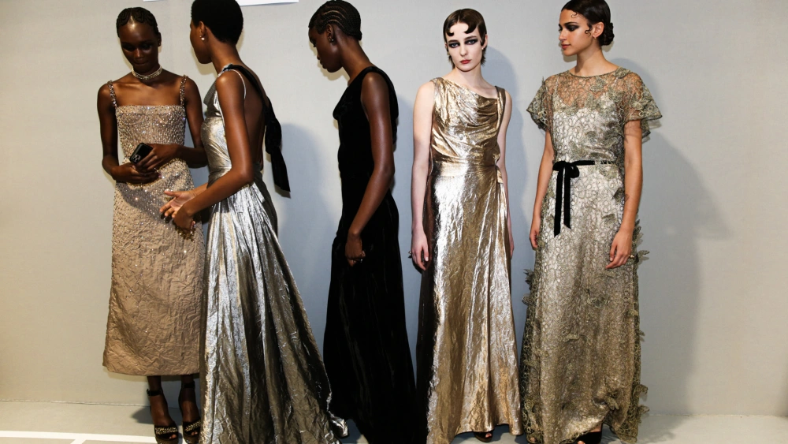

Lightness was the prevailing mood in Paris for this season's couture.
Shades of mint, frosted lemon, bubblegum and sherbert were on full display at Giorgio Armani’s harlequin-themed show
It was a moment for metal at the Paris couture collections.
Metallic sparkle was taken to new heights at the recent spring couture shows in Paris. While silver and gold are to be expected, designers shrewdly injected color into the mix. The glamour crescendoed with sparkling sequins, shining satins and incorporating a mix of intriguing-to-the-eye trompe l’oeil accents.
Go big on shine and make a statement for the biggest party night of the year.
Case in point: An array of sparkling ensembles, ranging from a classic column gown, emblazoned in silver sequined embellishments, from Carolina Herrera’s Wes Gordon or a resort-minded sequined maxi floral tube dress by LoveShackFancy to statement-making cocktail shakers à la LaQuan Smith’s sexy red cutout sequined mini and Valentino’s purple Tulle Illusione dress with allover sequin embroidery and feather-accented wrists.
minimalism
Minimalism’s omnipresence abounds. Sharply constructed sartorial ensembles and a neutral, sometimes monochromatic palette of purist white, grays and black resonated as a key choice, as seen from Thom Browne, R13’s Chris Leba, Nili Lotan, Norma Kamali and more. Similarly, the ubiquitous white shirt, as seen from Carolina Herrera to MM6, is a prominent layer for the season, at times becoming the core message, as well.